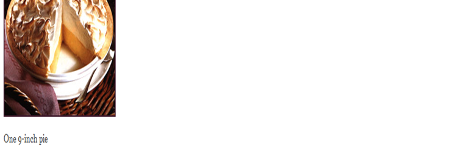

Mamas HomeMade Lemon Meringue Pie

| Prep Time: | 30 minutes |
| Cook Time: | 10 minutes |
| Total: | 40 minutes |
| Servings: | 8 |
Ingredients
- 1 cup white sugar
- 2 tablespoons all-purpose flour
- 3 tablespoons corn starch
- ¼ teaspoon salt
- 1 ½ cups water
- 2 lemons, juiced and zested
- 2 tablespoons butter
- 4 egg yolks, beaten
- 1 (9 inch) pie crst, baked
- 4 egg whites
- 6 tablespoons white sugar
Directions
- Preheat Oven: Preheat oven to 350 ℉ (175 ℃)
- Make Lemon Filling: In a medium saucepan
...
- Whisk together 1 cup sugar, flour, corn starch, and salt.
- Stir in water, lemon juice and lemon zest.
- Cook over medium-high heat, stirring frequently, until mixture comes to a boil.
- Stir in butter.
- Place egg yolks in small bowl and gradually whisk in ½ cup of hot sugar mixture.
- Whisk egg yolk mixture back into remaining sugar mixture.
- Bring to a boil and continue to cook while stirring constantly until thick.
- Remove from heat.
- Pour filling into baked pastry shell.
- Make Meringue: In a large glass or metal
bowl ...
- Whip egg whites until foam begins to form.
- Add sugar gradually, and continue to whip until stiff peaks form.
- Spread meringue over pie, sealing the edges at the crust.
- Bake: Bake in preheated oven for 10 minutes, or until meringue is goldent brown.